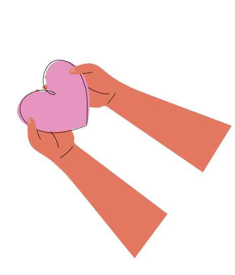
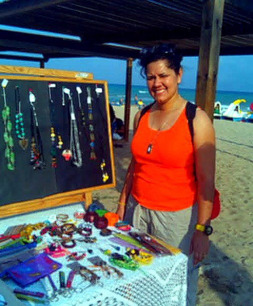
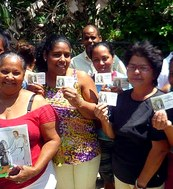
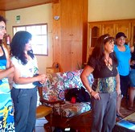
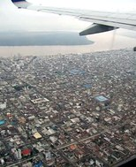
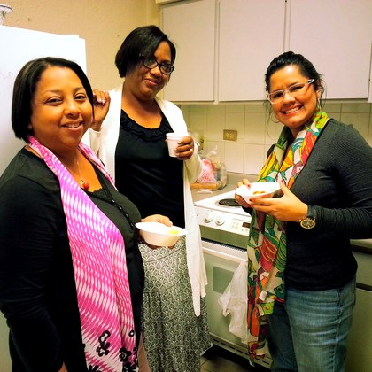
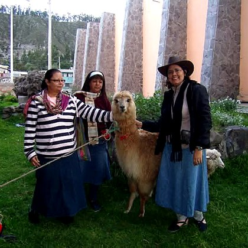
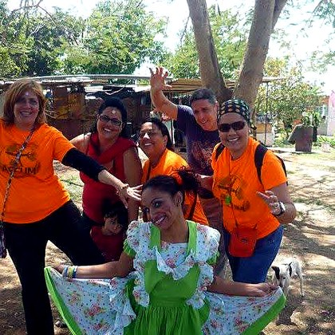

ACCUM es un ministerio cristiano interdenominacional dedicado a la formación, movilización y conexión de creyentes con la obra misionera, respondiendo al mandato de Jesucristo de hacer discípulos en todas las naciones. Servimos como una plataforma que capacita a obreros, pastores, líderes y miembros de iglesias mediante entrenamientos, talleres y viajes misioneros que fortalecen su compromiso con la Gran Comisión. Creemos que cada creyente tiene un propósito en el Reino de Dios y puede ser un instrumento de transformación para su comunidad y el mundo.
Años de Trayectoria
Año de Fundación
Enfoque Bíblico
Áreas de Enfoque
Años movilizando y equipando a la Iglesia



DIRECTORA EJECUTIVA y FUNDADORA
Con más de 20 años de experiencia misionera, fundó ACCUM en 2009 para inspirar, formar y movilizar obreros hacia las naciones.

FORMACIÓN
Pastores, misioneros experimentados y docentes que aportan conocimientos bíblicos, prácticos y transculturales.

COORDINACIÓN DE CAMPO
Coordinan la logística en el campo de servicio, la seguridad de los equipos y la mentoría diaria de los voluntarios.

CONEXIÓN GLOBAL
Trabajamos en red con ministerios y agencias internacionales para conectar a los participantes con proyectos a mediano y largo plazo.
Es un ministerio cristiano interdenominacional, fundado en el año 2009, dedicado a la formación, movilización y conexión de creyentes con la obra misionera para cumplir la Gran Comisión de Jesucristo de hacer discípulos en todas las naciones.
El primer paso es registrarse en nuestra Ruta Formativa. Los participantes pasan por entrenamientos previos y por el taller intensivo "Listos para Salir" (LPS) para prepararse espiritual, mental y logísticamente para el servicio.
Nuestras escuelas y talleres están orientados a pastores, líderes, ministerios locales y creyentes en general que deseen descubrir, confirmar o responder al llamado misionero de Dios y equiparse con bases bíblicas y prácticas sólidas.
Las donaciones se destinan íntegramente a financiar la logística de los viajes misioneros, becas para pasantías transculturales de 2 a 3 meses en Europa (zonas de poca presencia del evangelio), la elaboración de materiales didácticos y el desarrollo futuro de nuestro Programa de Acción Humanitaria.
Trabajamos en estrecha alianza con iglesias locales para impartir talleres en sus sedes, equipar a sus líderes en la formación de comités misioneros locales y actuar como puente de envío y mentoría para los creyentes que sienten el llamado.
Tu generosidad nos permite formar y enviar misioneros para impactar naciones con el evangelio.
Donar a través de ATH Móvil: [Número / ID de ACCUM]
Email de Zelle: [Correo Zelle de ACCUM]
Banco: [Nombre del Banco]
Tipo de Cuenta: [Ahorro/Corriente]
Número de Cuenta: [Número de Cuenta]
Ruta: [Número de Ruta]
«Cada uno dé como propuso en su corazón... porque Dios ama al dador alegre.» — 2 Corintios 9:7
{kind=link}
{kind=link}
{kind=link}
{kind=link}
{kind=link}
{kind=link}
{kind=link}
{kind=link}